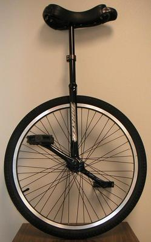
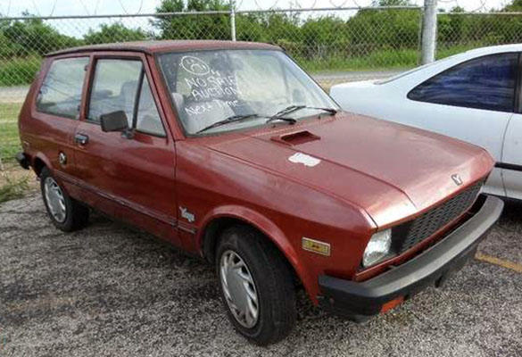
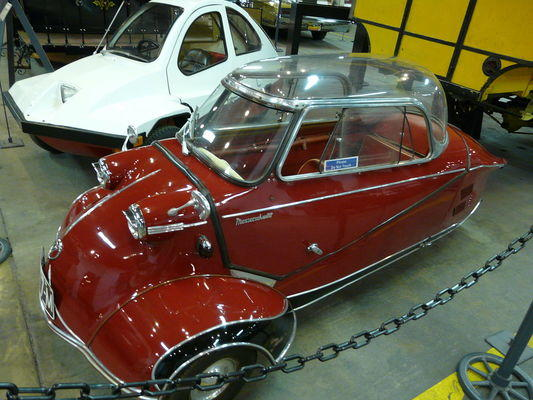

C绝对是万精油般的大吉普，紧凑，强健，没有去不了的地方，几乎可以覆盖你所有无理的需求。
C++就是C的一个翻版，但无论是尺寸还是性能都成了2倍，火力超强的装甲车，自由地驰骋于战场。但如果你是个毫无经验的半吊子的话，估计是开不动的，并且还有可能把自己给弄残！
C#将C++的狂野不羁收敛，让它更安全易用，将军用车辆改造成了民用的吉普。它外观似乎并不那么霸气但依然是很强大的，前提是你保持在加油站附近并且附近都是一样友好的居民。需要知道的是，一直有股黑暗势力萦绕在它周围试图颠覆它。
JAVA也算C的一个翻版，但他完成任务的方式更笨拙且效率低下，还会排放一些恼人的尾气，开起来感觉像个乡下人。
Python能够很好地满足你每日出行的需求，驾驶方便，功能齐全，虽然不是很豪华大气，但总比走路强。
曾经Perl也和Python差不多的，但现今只有大胡子怪叔叔会用它了。
LISP可谓得天地之灵气，集日月之精华，必将永世长存。它会让强者更强，但只有专业运动员和偏执狂才能驾驭它。

如果说LISP已经够潮了，那Haskell还要更潮一点！

PHP说来很复杂，你可能只有在半路抛锚了才意识到：啊~原来我开的是PHP。当你试图再次打火启动时，看起来又重新上路了，但如果节奏或油门踩得不对，你和车上的乘客有引火上身的危险。

Go是款华丽丽的玩具车，呆瓜们总觉得它就是未来。但其实只有在符合它的码率的情况下，这车才有点实际用途。毕竟不能把玩具车开得跟赛车一样。
COBOL在那个时代似乎是个不错的想法。
MATLAB是科学家用来搜索外太空用的卫星！
比较屌丝的科学家买不起MATLAB的时候就会乘着R牌气球去搜索外太空。

OCaml是上图那种不规则物体，欧洲人一般很钟爱。
那，这就是JavaScript。即使你给高尔夫球代步车装上赛车轮胎，它还是高尔夫代步车。